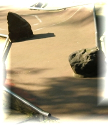
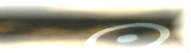
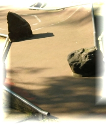
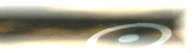

Hier kann ein einleitender Text für die Homepage stehen Begrüßung, oder so...
Willkommen auf den Internetseiten des 1. Duisburger Minigolf-Club e.V.
9. Rheinhausener Sternpokal
Am 25. Mai 2008 findet zum neunen Mal der Sternpokal des 1. Duisburger MC statt. Das Termin liegt am Wochenende vor dem Meisterschafts-Heimturnier des 1. Duisburger MC. Es eignet sich somit optimal als Training.
zur Ausschreibung...
Ergebnisse des Winterpokals 2007/2008
Die Ergebnisse des Winterpokals 2007/2008 sind da.
zu den Ergebnissen...
Damit Ihr unsere Seite immer schnell wiederfindet, legt in
Eurem Browser ein Lesezeichen/Favoriten an. Einfach in der
Menüzeile auf Lesezeichen/Favoriten und dann auf
Lesezeichen/Favoriten hinzufügen. klicken. Über
dieses Lesezeichen kommt Ihr in Zukunft mit einem Klick auf
unsere Seiten.
 


